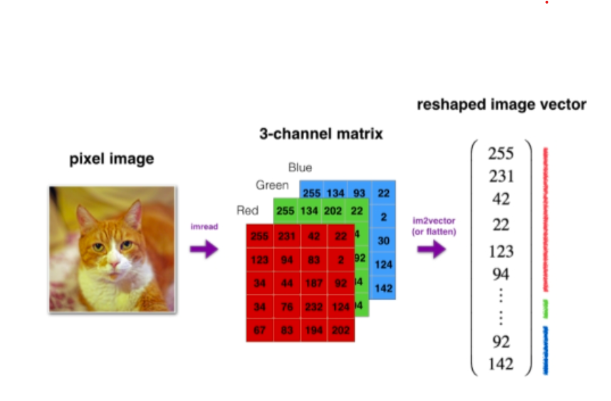

Understanding Matrices and Logistic Regression in Neural Networks
In this document, we explore the foundations of matrices in neural networks, logistic regression, forward propagation, and updating weights using stochastic gradient descent. We will implement a basic example in R to reinforce learning.
1 Understanding Matrices in Neural Networks
Matrices enable efficient mathematical operations in neural networks. For a simple model:
\[ Z = XW \]
where:
\(X\) is the input matrix (containing feature values).
\(W\) is the weight matrix (containing learned coefficients).
\(Z\) is the output before activation.
1.0.1 Traditional Logistic Regression Notation
In standard logistic regression, the equation is expressed using individual predictor variables:
\[ Z = \beta_0 + \beta_1 x_1 + \beta_2 x_2 + \dots + \beta_n x_n \]
where:
\(\beta_0\) is the intercept (bias term).
\(\beta_1, \beta_2, \dots, \beta_n\) are the weights (coefficients) assigned to each feature.
\(x_1, x_2, \dots, x_n\) are the input feature values (e.g., time spent, pages visited).
\(Z\) is the linear combination before applying the activation function.
Once \(Z\) is computed, the logistic function (sigmoid activation) is applied:
\[ \sigma(Z) = \frac{1}{1 + e^{-Z}} \]{eq-sigmoid-function}
Both forms describe the same underlying concept:
The matrix form (\(Z = XW\)) is compact and efficient, especially when handling multiple samples.
The traditional logistic regression form explicitly shows the relationship between individual features and their respective weights.
Both representations lead to the same outcome: a probability prediction via the sigmoid function.
The term \(Z\) in the sigmoid activation function is most commonly referred as the weighted sum of imputs (plus bias)
Herer’s a breakdown: In a single neuron, before an activation function is applied, a neuron takes multiple inputs, multiplies each input by a corresponding weight, sums these weighted inputs, and then adds the bias term. So \(Z\) represents the linear combination of the inputs to a neuron before any any non-linear transformation is applied.
The concept around activation functions 1. Introducing Non-linearity: this is the most important reason for activation functions. Imagine a neural network without activation functions. Each neuron would simply perform a linear transformation (weighted sum +bias). If you stack multiple layers of linear transformations, the entire network would still be a single linear transformation. Real world data is almost never linearly separable. Problems like image recognition, natural language or complex pattern detection involve highly non-linear relationships. Activation functions introduce non-linearity, allowing neural network to learn and approximate complex, non-linear functions and relationships in the data. You can think of an activation function as determining whether a neuron should “activate” or “fire” and pass its signal to the next layer. It transforms the raw, unbounded weighted sum (Z) into an output that is typically within a specific range, often interpreted as probability or a strength of activation. Sigmoid maps any real number (Z) to a value between 0 and 1. This makes it ideal for output layers in binary classification problems, where the output can be interpreted as a probability.
2 Logistic Regression Model
Logistic regression predicts probabilities using the sigmoid function: The sigmoid function is a mathematical function that outputs values between 0 and 1, making it ideal for logistic regression, where we interpret the result as a probability.
\[ \sigma(Z) = \frac{1}{1 + e^{-Z}} \tag{1}\]
\(Z\) is the input value (can be any real number)
\(e\) is Euler’s number
Tip
If \(Z\) is large and positive,\(\sigma(z)\) approaches 1 (strong positive probability)
If \(z\) is large and negative,\(\sigma(z)\) approaches 0 (strong negative probability)
when \(z=0\), \(\sigma(z)=0.5)\), meaning neutral probability
3 Forward Propagation & Loss Function
Predictions (\(\hat{y}\)) are made using: \[\hat{y} = \sigma(Z)\] The binary cross-entropy loss function quantifies the error between the estimate and the real output provided to the model: \[ L = -\frac{1}{m} \sum_{i=1}^{m} \left[ y_i \log(\hat{y}_i) + (1 - y_i) \log(1 - \hat{y}_i) \right] \tag{2}\]
4 Updating Weights with Gradient Descent
Since we don’t know the optimal values of \(W\), we start with random weights and iteratively update them to minimize the loss function. Now, let’s break down the equation further and clarify the partial derivatives.
Gradient loss function: \[ dw =\frac{\partial L}{\partial W} = \frac{1}{m} X^T (A-Y) \tag{3}\]
This term represents the gradient, or the slope, of the loss function \(L\) with respect to \(W\). Essentially, it tells us:
How much the loss function changes when we slightly change\(W\) The direction we should move \(W\) to minimize the loss.
Since \(L\) depends on \(W\) (because changing 𝑊affects predictions), we need to calculate the rate of change of \(L\) concerning \(W\), which is where the partial derivative comes in.
Partial Derivatives Explained A partial derivative calculates how one variable changes while keeping others constant. In our case: \[ \frac{\partial L}{\partial W} \] measures how much the loss function changes if we make a small adjustment to \(W\). If we visualize the loss function as a mountain, the gradient tells us which direction leads us downhill the fastest (toward lower loss). The gradient gives the best direction for adjusting W, but how far we step in that direction is controlled by the learning rate \(\alpha\)
\[ W = W -\alpha \cdot \frac{\partial L}{\partial W} \] Where:
\(\alpha\) is the learning rate (a small step size to prevent large jumps)
\(\frac{\partial L}{\partial W}\) is the gradient
\(W\) is updated gradually with each iteration.
For logistic regression, the gradient of the binary cross-entropy loss function with respect to \(W\) is: \[ \frac{\partial L}{\partial W} = \frac{1}{m}X^T(\hat y -y) \] Where:
\(X\) is the input matrix (features)
\(y\) is the actual target values.
\(\hat y = \sigma(XW)\) is the predicted output after applying the sigmoid function.
\(X^T(\hat y- y)\) measures the error’s contribution to weight updates.
Code
# Example loss reduction over iterations
iterations <- seq(1, 100)
loss_values <- exp(-0.05 * iterations) # Simulated loss decreasing
# Create dataframe
df <- data.frame(iteration = iterations, loss = loss_values)
# Plot loss reduction
ggplot(df, aes(x = iteration, y = loss)) +
geom_line(color = "red", size = 1) +
ggtitle("Loss Reduction Over Iterations") +
xlab("Iteration") +
ylab("Loss") +
theme_minimal()
5 Implementation in R
Scenario: Predicting Whether Someone Will Buy a Product Imagine you’re running an online store, and you want to predict whether a customer will buy a product based on two simple features:
Time spent on the website (in minutes)
Number of pages visited
We’ll create a small dataset with these features and train a logistic regression model using gradient descent to predict whether a customer will buy the product (1) or not (0).
The traditional logistical regression formula would be: \[ Z=\beta_0+\beta_1 x_{1i}+\beta_2 x_{2i}+\epsilon_i \]
where:
\(\beta_0\) is the intercept (bias term).
\(\beta_1, \beta_2\) are the weights (coefficients) assigned to each feature.
\(x_{1i}, x_{2i}\) are the feature values for the\(i\)-th sample.
\(\epsilon_i\) is the error term accounting for noise in the data.
Instead of writing the equation explicitly for each feature, we can use matrix multiplication:
\[ Z = XW + \epsilon \]
Where:
\(X\) is the input matrix containing feature values.
\(W\) is the weight matrix (vector of coefficients).
\(\epsilon\) is the error term.
Expanding this in matrix notation:
\[ \begin{bmatrix} Z_1 \\ Z_2 \\ Z_3 \\ \vdots \\ Z_m \end{bmatrix}=\begin{bmatrix} 1 & x_{11} & x_{21} \\ 1 & x_{12} & x_{22} \\ 1 & x_{13} & x_{23} \\ \vdots & \vdots & \vdots \\ 1 & x_{1m} & x_{2m} \end{bmatrix} \begin{bmatrix} \beta_0 \\ \beta_1 \\ \beta_2 \end{bmatrix}+ \begin{bmatrix} \epsilon_1 \\ \epsilon_2 \\ \epsilon_3 \\ \vdots \\ \epsilon_m \end{bmatrix} \]
Where:
Each row in \(X\) represents one sample, including a bias term (1), feature 1, and feature 2.
The column vector \(W\) contains the learned parameters (\(\beta_0, \beta_1, \beta_2\)).
The error term \(\epsilon\) accounts for random noise in predictions.
We have data from 5 customers, we will create a matrix for this: Each row in \(X\) represents a customer. First column = Bias term (always 1). Second column = Time spent on the website. Third column = Number of pages visited. y contains whether the customer bought the product (1) or not (0).
As a recapitulation, we use the sigmoid function to predict the expected output of any specific combination of minutes in the website and pages visited. We will create a function for this:
The loss function will tell us how far our predicted value is from the actual value, we will also create a function for this:
Now we create a function to calculate the gradient descent
Code
gradient_descent <- function(X, y, learning_rate = 0.01, iterations = 50) {
m <- nrow(X)
W <- runif(ncol(X)) # Initialize weights randomly
for (i in 1:iterations) {
Z <- X %*% W # Compute Z values for all samples
y_hat <- sigmoid(Z) # Apply sigmoid function to all samples
gradient <- t(X) %*% (y_hat - y) / m # Compute gradient for weight updates
W <- W - learning_rate * gradient # Update weights
}
return (W)
}Just for learning purposes, we will create a new version of the gradient descent function where we store the results of each iteration, so we can visualize it later:
Code
# Gradient Descent Implementation (Tracking Progress)
gradient_descent_progress <- function(X, y, learning_rate = 0.01, iterations = 50) {
m <- nrow(X)
W <- runif(ncol(X)) # Initialize weights randomly
progress <- data.frame(Iteration = integer(),
Weight1 = numeric(), Weight2 = numeric(),
Z1 = numeric(), Z2 = numeric(), Z3 = numeric(), Z4 = numeric(), Z5 = numeric(),
y_hat1 = numeric(), y_hat2 = numeric(), y_hat3 = numeric(), y_hat4 = numeric(), y_hat5 = numeric(),
Grad1 = numeric(), Grad2 = numeric()) # Tracking all five samples
for (i in 1:iterations) {
Z <- X %*% W # Compute Z values for all samples
y_hat <- sigmoid(Z) # Apply sigmoid function to all samples
gradient <- t(X) %*% (y_hat - y) / m # Compute gradient for weight updates
W <- W - learning_rate * gradient # Update weights
# Store results for all five samples
progress <- rbind(progress, data.frame(
Iteration = i,
Weight1 = W[2], Weight2 = W[3],
Z1 = Z[1], Z2 = Z[2], Z3 = Z[3], Z4 = Z[4], Z5 = Z[5],
y_hat1 = y_hat[1], y_hat2 = y_hat[2], y_hat3 = y_hat[3], y_hat4 = y_hat[4], y_hat5 = y_hat[5],
Grad1 = gradient[2], Grad2 = gradient[3]
))
}
return(progress)
}At the beginning, the weights are random.
Over each iteration, the values change towards better predictions.
\(Z\) values show the raw linear transformation before activation.
\(\hat{y}\) (y_hat) tracks how probabilities evolve as weights adjust.
Gradient values indicate how weights update to minimize the loss.
If you increase iterations, you’ll see further refinement.
Code
Iteration Weight1 Weight2 Z1 Z2 Z3 Z4 Z5
1 1 0.6888648 0.5675639 4.843405 13.58712 18.24565 2.162957 26.98937
2 2 0.6753759 0.5618110 4.760556 13.35190 17.93135 2.126398 26.52269
3 3 0.6619085 0.5560680 4.677836 13.11703 17.61753 2.089897 26.05672
4 4 0.6484633 0.5503354 4.595251 12.88254 17.30422 2.053458 25.59151
5 5 0.6350416 0.5446137 4.512808 12.64845 16.99143 2.017082 25.12707
6 6 0.6216444 0.5389033 4.430512 12.41477 16.67920 1.980774 24.66346
y_hat1 y_hat2 y_hat3 y_hat4 y_hat5 Grad1 Grad2
1 0.9921814 0.9999987 1.0000000 0.8968733 1 1.350927 0.5762460
2 0.9915118 0.9999984 1.0000000 0.8934425 1 1.348884 0.5752916
3 0.9907866 0.9999980 1.0000000 0.8899173 1 1.346747 0.5742961
4 0.9900013 0.9999975 1.0000000 0.8862965 1 1.344512 0.5732572
5 0.9891514 0.9999968 1.0000000 0.8825790 1 1.342173 0.5721731
6 0.9882318 0.9999959 0.9999999 0.8787636 1 1.339725 0.5710413


Understanding the Learned Weights
After running gradient descent, we obtained the following learned weights:
Code
set.seed(2)
# Gradient Descent Implementation (Track Progress)
gradient_descent <- function(X, y, learning_rate = 0.01, iterations = 50) {
m <- nrow(X)
W <- runif(ncol(X)) # Initialize weights randomly
for (i in 1:iterations) {
Z <- X %*% W # Compute Z values for all samples
y_hat <- sigmoid(Z) # Apply sigmoid function to all samples
gradient <- t(X) %*% (y_hat - y) / m # Compute gradient for weight updates
W <- W - learning_rate * gradient # Update weights
}
return (W)
}
W <- gradient_descent(X, y)
print(W) [,1]
[1,] 0.01567795
[2,] 0.09666904
[3,] 0.31485151These correspond to:
\(W_0\) Bias term (Intercept).
\(W_1\) Effect of Time Spent on probability of purchasing.
\(W_2\) Effect of Pages Visited on probability of purchasing.A positive value increases probability, while a negative value decreases probability.
To predict whether a new customer will buy a product, we use the following equation:
\[ Z = W_0 + W_1 \cdot \text{Time Spent} + W_2 \cdot \text{Pages Visited} \]
Once we calculate\(Z\), we apply the sigmoid activation function:
\[ \sigma(Z) = \frac{1}{1 + e^{-Z}} \]
where \(\sigma(Z)\) represents the probability that the customer will buy.
Example Calculation Let’s take a new customer who spends 12 minutes on the website and visits 4 pages. We calculate \(Z\) as:
\[ Z = 0.01567795 + (0.09666904 \times 12) + (0.31485151 \times 4) \]
Applying the learned weights, the prediction follows:
\[ Z = 2.435112 \]
Applying the sigmoid function:
\[ \sigma(2.435112) = \frac{1}{1 + e^{-2.435112}} \]
Approximating:
\[ \sigma(2.435112) \approx 0.91 \]
Thus, the model predicts 91% probability that this customer will buy the product.
Let’s see the predictions calculated in r over the same data we used for training:
Code
# Get predictions
predicted_probs <- predict_probability(X, W)
# Create dataframe for plotting
df <- data.frame(TimeSpent = X[,2], PagesVisited = X[,3], Probability = predicted_probs)
# Plot results
ggplot(df, aes(x = TimeSpent, y = PagesVisited, color = Probability)) +
geom_point(size = 4) +
scale_color_gradient(low = "blue", high = "red") +
ggtitle("Logistic Regression: Probability of Purchase") +
xlab("Time Spent on Website (minutes)") +
ylab("Number of Pages Visited") +
theme_minimal()
We apply gradient descent to learn optimal weights and predict whether future customers will buy by minimizing the loss function iteratively.
6 Cat /Non-cat exercise
We are going to use the cat/non-cat dataset from kaggle package to see how to use these maths to find out if a given image is a cat or not a cat. The cat dataset comes in hdf5format so we will need to install a couple of libraries to load it.
Now we load the datasets for our model. You can download the data from cat/non-cat
Data Loading and Preprocessing for Image Classification
Before we can feed our “cat/non-cat” image data into our logistic regression model, we need to load it and transform it into a format that our matrix-based gradient descent implementation can efficiently process. Image data, especially raw pixel values, requires several crucial preprocessing steps to make it suitable for machine learning algorithms.
- Loading the HDF5 Dataset
Our image dataset is stored in HDF5 (.h5) files, a format optimized for storing large arrays of numerical data. The dataset is conveniently split into two files: train_catvsnoncat.h5 for training and test_catvsnoncat.h5 for evaluation. Within each file, the image pixel data is typically stored under a key like train_set_x (or test_set_x), and their corresponding labels under train_set_y (or test_set_y).
We use the h5read() function from the rhdf5 package to extract these specific datasets from the HDF5 files.
Code
library(rhdf5)
test_data_file_path <- file.path("data", "test_catvsnoncat.h5")
train_data_file_path <- file.path("data", "train_catvsnoncat.h5")
# Load training and test data
train_dataset <- h5read(train_data_file_path, "train_set_x")
train_labels <- h5read(train_data_file_path, "train_set_y")
# Load test data
test_dataset <- h5read(test_data_file_path, "test_set_x")
test_labels <- h5read(test_data_file_path, "test_set_y")Raw image data is inherently multi-dimensional (e.g., 64 pixels height x 64 pixels width x 3 color channels for RGB).
By looking at the dimensions of the datasets we can see that we have 209 images in the train dataset and 50 in the test dataset:
If we want to extract the data for the first cat image (the first cat image is the third image in the train dataset), for example:
Code
[1] 3 64 64This will give us a 3X64x64 matrix
To get just the first channel (Red) for the first image:
Code
[1] 64 64Le’t see the first 10 pixels of that channel:
[,1] [,2] [,3] [,4] [,5] [,6] [,7] [,8] [,9] [,10]
[1,] 52 5f 5e 60 63 5e 62 65 67 6d
[2,] 59 68 61 62 63 60 62 69 69 6e
[3,] 64 6e 6e 65 6d 67 6a 73 70 70
[4,] 6a 74 77 6f 74 72 6d 79 77 73
[5,] 76 78 7a 72 7d 7d 71 77 7c 75
[6,] 79 7e 80 76 7c 81 7c 7a 81 7c
[7,] 77 7e 83 7d 7b 7f 83 80 86 85
[8,] 85 80 84 81 7c 80 85 83 87 88
[9,] 84 82 83 88 82 7f 87 86 86 88
[10,] 82 7d 7e 83 85 7f 84 8c 8a 89We can see that we have hexadecimal values, so we will need to convert them to numeric:
Code
# Convert character (hex) values to numeric integers ---
# 'strtoi()' converts string representations of numbers in a given base
#(here, 16 for hexadecimal) to integers. We apply it directly to the entire array, preserving its dimensions.
original_train_dims <- dim(train_dataset)
original_test_dims <- dim(test_dataset)
train_dataset <- array(strtoi(as.vector(train_dataset), base = 16), dim = original_train_dims)
test_dataset <- array(strtoi(as.vector(test_dataset), base = 16), dim = original_test_dims)Let’s see the Red channel of the image again to see if its numeric now:
[1] 3 64 64 209Code
[,1] [,2] [,3] [,4] [,5] [,6] [,7] [,8] [,9] [,10]
[1,] 82 95 94 96 99 94 98 101 103 109
[2,] 89 104 97 98 99 96 98 105 105 110
[3,] 100 110 110 101 109 103 106 115 112 112
[4,] 106 116 119 111 116 114 109 121 119 115
[5,] 118 120 122 114 125 125 113 119 124 117
[6,] 121 126 128 118 124 129 124 122 129 124
[7,] 119 126 131 125 123 127 131 128 134 133
[8,] 133 128 132 129 124 128 133 131 135 136
[9,] 132 130 131 136 130 127 135 134 134 136
[10,] 130 125 126 131 133 127 132 140 138 137Now we can display the Red channel as a grayscale image
Code
# Normalize pixel values (0-255 to 0-1) for plotting
first_cat_image_red_channel_normalized <- first_cat_image_red_channel_raw / 255
# For a single channel, higher values will appear brighter.
plot(as.raster(first_cat_image_red_channel_normalized),
main = "First Image: Red Channel Only (Grayscale)")
- Flattening the Images
As we have seen, the image data is multi-dimensional, however, our logistic regression model, which operates on linear combinations of features, expects each image to be represented as a single, flat vector of features.

This step transforms each 3D image array into a 1D vector by concatenating all its pixel values. We then stack these individual vectors to form a 2D matrix, where each row corresponds to a single image (sample) and each column represents a specific pixel feature. This conversion makes the data compatible with standard matrix multiplication operations like \(Z = XW\), where \(X\) is a (samples x features) matrix.
Code
[1] 209 12288[1] 50 12288- Converting Labels to a Matrix (Column Vector)
The labels (0 for non-cat, 1 for cat) are initially loaded as simple numerical vectors. For consistency and robustness in matrix operations within our gradient descent functions (e.g., calculating y_hat - y), it’s good practice to explicitly convert these label vectors into single-column matrices. This ensures that matrix multiplication and subtraction behave as expected without unexpected R vector recycling rules.
Code
[1] 209 1[1] 50 14. Normalizing Pixel Values
Image pixel intensities range from 0 to 255. This step involves dividing all pixel values by 255 (the max value), scaling them down to a standardized range between 0 and 1.
This normalization is critical for several reasons:
Numerical Stability: Machine learning algorithms, especially those that rely on gradient descent, perform much better and converge more reliably when input features are on a similar, small scale. Large input values can lead to extremely large intermediate calculations (\(Z\) values) and gradients, potentially causing numerical overflow or instability.
Faster Convergence: Scaling features to a consistent range helps the optimization algorithm find the optimal weights more efficiently. The sigmoid activation function, in particular, has a very flat gradient for very large or very small inputs; normalizing helps keep inputs within the active range of the sigmoid, where gradients are stronger and learning is more effective.
5. Adding a Bias Term (Intercept)
Finally, we add an extra column of 1s to the leftmost side of our feature matrices (X_train and X_test).
This column represents the bias term (or intercept) for our logistic regression model. In the matrix multiplication \(Z = XW\), if \(X\) includes this column of ones, the first element of the weight vector \(W\) will correspond to \(\beta_0\) (the intercept). This allows the model to learn a baseline probability (or a baseline activation) even if all other feature values are zero. It effectively shifts the decision boundary, giving the model more flexibility to fit the data.
Code
# Prepends a column of '1's to the feature matrices. This allows the model
# to learn an intercept, which is a baseline prediction independent of features.
X_train <- cbind(1, X_train)
X_test <- cbind(1, X_test)
# --- Display Final Dimensions for Verification ---
# These outputs confirm the shape of your data matrices after preprocessing.
cat("--- Final Data Dimensions (after preprocessing) ---\n")--- Final Data Dimensions (after preprocessing) ---Dimensions of X_train (samples x (features + bias)): 209 12289 Dimensions of y_train (samples x 1): 209 1 Dimensions of X_test (samples x (features + bias)): 50 12289 Dimensions of y_test (samples x 1): 50 1 Building the parts of our algorithm
The main steps for building a neural network are:
Define the model structure (such as number of input features)
Initialize the model’s parameters
loop:
Calculate current loss (forward propagation)
Calculate current gradient (Backward propagation)
Update parameters (gradient descent)
You often build 1-3 separately and integrate them into one function we call model.
Let’s start:
For one sample image \(x_i\) :
\[ z_i= w^Tx_i+b \] the probability of belonging to the cat class will be calculated as:
\[ \hat{y_i} = a_i = sigmoid(z_i) \]
where the formula for the sigmoid function is:
\[ \sigma(Z) = \frac{1}{1 + e^{-Z}} \]
and loss function:
\[
L = -\frac{1}{m} \sum_{i=1}^{m} \left[ y_i \log(\hat{y}_i) + (1 - y_i) \log(1 - \hat{y}_i) \right]
\]
so for each image \(x_i\):
\[ L(a_i,y_i) = -y_i \log(a_i)- (1-y_i)log(1-a_i) \]
The cost is then computed by summing over all training examples:
\[ J=\frac{1}{m} \sum^m_{i=1} L(a_1,y_i) \]
This will:
initialize the parameters of the model
learn the parameters for the model by minimizing the cost
Use the learned parameters to make predictions (on the test set)
Analyse the results.
Create the helper functions
Implement sigmoid() where \(z\) is a scalar or array of any size
Initialize a initial weight vector with zeros:
Initialize bias as 0
The activated input will be the sigmoid for all the \(x_i\) values:
\[ A= (a_1,a_2,\cdots,a_m) \]
and \(a_1 = sigmoid (W^T x_i + b)\)
When we apply the formula above in our code, we do it differently: \(XW+b\) The difference between the mathematical notation \((W^T x_i + b)\) and the R code X %*%W +b is due to how vector and matrix dimensions are conceptualized and applied in different contexts. Both approaches are mathematically equivalent: In many mathematical texts and derivations, \(W\) (the weight vector) is typically represented as a column vector of dimensions (number_of_features X 1). \(x_i\) (a single input sample) is also typically represented as a column vector. To compute the doc product for a single sample, you need to multiply a row vector by a column vector, therefore, you just transpose \(W\) to get \(W^T\) (a \(1 \times \text{number_of_features}\) row vector), which can then be multiplied by \(x_i\). This results in a \(1 \times 1\) scalar value for \(z_i\) for that single sample.
In R and many other programming languages and machine language libraries, the standard convention for the input matrix \(X\) is Rows represent individual samples and Columns represent features.
So our \(X\) matrix has dimensions (number_of_samples x number_of_features) (209 x 12288). Given this and our \(W\) vector being a (number_of_features x 1) (12288 x 1), the matrix multiplication perfectly aligns. The result is a (number_of_samples x 1) matrix, where each row contains the linear combination (z) for one sample.
Code
# Computes the activated output (predicted probabilities A) given weights W, bias b, and input X.
# Returns: A vector/matrix of activated outputs (probabilities), (samples x 1)
activate <- function(W, b, X){
Z <- X %*% W + b
# Apply the sigmoid activation function element-wise to Z
A <- sigmoid(Z)
return(A)
}Now we create a function to calculate the binary cross-entropy loss:
\[ L = -\frac{1}{m} \sum_{i=1}^{m} \left[ y_i \log(\hat{y}_i) + (1 - y_i) \log(1 - \hat{y}_i) \right] \]
Code
# Returns: A single scalar value representing the total cost.
cost_function <- function(W, b, X, Y) {
# Calculate the number of samples (m) from the dimensions of X
m <- nrow(X)
# Calculate the activated output (predicted probabilities A) using the activate function
A <- activate(W, b, X)
# Calculate the binary cross-entropy loss
cost <- - (1/m) * sum(Y * log(A) + (1 - Y) * log(1 - A))
return(cost)
}Where:
\(w\) is the weights matrix, it will be an array of the same dimensions as features in the flattered dataset (\(64 \times 64 \times 3, 1\))
\(b\) is a scalar representing the bias
\(X\) is the data (our flattened array)
\(Y\) is the labels matrix
Understanding Cost
In machine learning, a cost function is a mathematical measure of how well (or how poorly) a model performs relative to its task. It quantifies the “error” or “discrepancy” between the model’s predicted output and the actual true values (labels) in your training data.
Think of it as a scoring system:
Low Cost: Indicates that your model’s predictions are very close to the actual values.
High Cost: Means your model’s predictions are significantly different from the actual values, indicating poor performance.
The primary goal of training a machine learning model is to minimize this cost function. We do this by adjusting the model’s internal parameters (your weights \(W\) and bias \(b\)) during the learning process (gradient descent).
The Binary Cross-Entropy Cost Function in Detail
In our cat/non-cat example, we’re using a specific type of cost function called Binary Cross-Entropy (BCE) Loss, also known as Log Loss. This is the standard choice for binary classification problems (where there are only two possible outcomes, like cat/non-cat, 0/1, true/false).
\[ L(a_i,y_i) = -y_i \log(a_i)- (1-y_i)log(1-a_i) \]
This single-example loss function behaves differently depending on the true label \(y_i\):
- When \(y_i=1\) (it’s a cat): The formula simplifies to:
\[ L(a_i, 1) = -1 \cdot \log(a_i) - (1 - 1) \cdot \log(1-a_i) \] \[ L(a_i, 1) = -\log(a_i) -0 \]
In this case, the cost is only influenced by \(\log(a_i)\).
If the model predicts a high probability for a cat (\(a_i\) close to 1), \(\log(a_i)\) will be close to 0 (since \(\log(1)=0\)), and thus the loss \(\log(a_i)\) will be close to 0. This is good!
If the model incorrectly predicts a low probability for a cat (\(a_i\) close to 0), \(\log(a_i)\) will be a large negative number (e.g., \(\log(0.01)≈−4.6\)), and thus the loss \(-\log(a_i)\) will be a large positive number (e.g., 4.6). This penalizes the model heavily for being confident but wrong.
- When \(y_i=0\) (it’s a non-cat): The formula simplifies to: \[ L(a_i, 0) = -0 \cdot \log(a_i) - (1 - 0) \cdot \log(1 - a_i) \] \[ L(a_i, 0) = -\log(1 - a_i) \] Here, the cost is only influenced by \(\log(1−a_i)\).
- If the model predicts a low probability for a cat (\(a_i\)) close to 0, meaning \(1−a_i\) is close to 1), \(\log(1−a_i)\) will be close to 0, and the loss: \(-\log(1−a_i)\)) will be close to 0.
- If the model incorrectly predicts a high probability for a cat (\(a_i\) close to 1, meaning \(1−a_i\) is close to 0), \(\log(1−a_i)\) will be a large negative number, and the loss \(-\log(1−a_i)\)) will be a large positive number. Again, this penalizes confident wrong predictions.
The total Cost(\(J\)): The overall cost \(J\) for the entire training set is the average of the individual losses over all \(m\) training examples: \[ J= \frac{1}{m}\sum_{i=1}^m L(a_1,y_i) \]Averaging the cost is representative of the model’s performance across the entire dataset, and it makes the cost function less sensitive to the size of the training set.
Cost vs. Accuracy It’s important to distinguish between “cost” and “accuracy”:
- Cost (e.g., BCE Loss): This is a continuous value that measures the overall “error” of the model. It’s what the optimization algorithm directly tries to minimize. It’s often not directly interpretable as “percentage correct” but provides a nuanced measure of certainty and error.
- Accuracy: This is a simple metric that measures the proportion of predictions that were exactly correct (e.g., 90% of images classified correctly). It’s easy for humans to understand, but it’s a discrete measure (either right or wrong).
The logical next step in building a logistic regression model with gradient descent is to implement the “backward pass”, which involves calculating the gradients. These gradients tell us how much each weight (W) and the bias (b) contribute to the total cost, and in which direction they need to be adjusted to minimize that cost.
We will create a propagate function. It will combine the forward pass (computing A and cost) with the backward pass (computing the gradients dW and db).
To update our weights (W) and bias (b) during gradient descenct, we need to know the derivative of the cost function with respect to these parameters. These derivatives are known as gradients
Gradient of the cost with respect to the weights (dW): \[
dw = \frac{1}{m} X^T (A-Y)
\] In R this computes to (1/m) * t(X) %*% (A-Y).
For bias (db): \[ db = \frac{1}{m} \sum_{i=1}^m (A_i-Y_i) \]
in R this simplifies to (1/m)* sum(A-Y)
Code
# Returns: A list containing 'cost', 'dW', and 'db'.
propagate <- function(W, b, X, Y) {
# Get the number of samples (m)
m <- nrow(X)
# --- Forward Propagation ---
# 1. Calculate activated output (predicted probabilities A)
A <- activate(W, b, X)
# 2. Calculate the cost
cost <- cost_function(W, b, X, Y) # Using the integrated cost_function
# --- Backward Propagation (Calculate Gradients) ---
# 1. Calculate gradient for weights (dW)
dW <- (1/m) * (t(X) %*% (A - Y))
# 2. Calculate gradient for bias (db)
# Sums all elements of (A - Y) and averages them.
db <- (1/m) * sum(A - Y)
# Store gradients in a list
gradients <- list(dW = dW, db = db)
# Return results as a list
return(list(cost = cost, gradients = gradients))
}Optimization: Learning with Gradient descent
Now that we have a function (propagate) that can calculate the cost and the gradients, we need to use those gradients to “learn”. This is done through an optimization algorithm called Gradient Descent.
The core idea is simple: we will iteratively adjust our parameters, \(W\) and \(b\), in the direction that minimally reduces the cost function \(J\). The gradients, \(dW\) and \(db\), tell us the direction of the steepest ascent of the cost function, so to decrease the cost, we move in the opposite direction.
The update rules for the parameters are: \[ W = W- \alpha \cdot dW \]
\[ b = b- \alpha \cdot db \] Alpha is the learning rate, a crucial hyperparameter that controls how large of a step we take during each update. If \(\alpha\) is too large, we might overshoot the optimal value. If it is too small, the training process will be very slow. Finding a good learning rate is a key part of training neural networks
Let’s create an optimize() function that performs this process for a specified number of iterations
Code
# This function optimizes W and b by running a gradient descent algorithm.
#
# Arguments:
# W -- weights, a numerical matrix of size (num_features, 1)
# b -- bias, a scalar
# X -- data of size (num_samples, num_features)
# Y -- true "label" vector (e.g., 0 for non-cat, 1 for cat)
# num_iterations -- number of iterations for the optimization loop
# learning_rate -- learning rate of the gradient descent update rule
# print_cost -- if TRUE, prints the cost every 100 iterations
#
# Returns:
# A list containing the final learned parameters (W, b) and a record of the costs.
optimize <- function(W, b, X, Y, num_iterations, learning_rate, print_cost = FALSE) {
costs <- c() # Vector to store the cost at each interval
for (i in 1:num_iterations) {
# Calculate cost and gradient for the current parameters (W, b)
results <- propagate(W, b, X, Y)
cost <- results$cost
gradients <- results$gradients
dW <- gradients$dW
db <- gradients$db
# Update rule for W and b
W <- W - learning_rate * dW
b <- b - learning_rate * db
# Record the cost every 100 iterations
if (i %% 100 == 0) {
costs <- c(costs, cost)
if (print_cost) {
cat("Cost after iteration", i, ":", cost, "\n")
}
}
}
# Return the learned parameters and tracked information
return(list(
W = W,
b = b,
costs = costs,
gradients = list(dW = dW, db = db)
))
}Making predictions Once the model has been trained and we have our optimized parameters \(W\) and \(b\), the final step is to make predictions on new data. The prediction process involves two steps:
Calculate the predicted probabilities $\hatY = A = \sigma(XW+b)$ for a given dataset $X$.
Convert these probabilities into final predictions (0 or 1). A common convention is to classify an image as cat (1) if its corresponding probability in \(A\) is greater than 0.5, and as non-cat (0) otherwise.
Code
# Predicts whether the label is 0 or 1 using learned logistic regression parameters (W, b).
#
# Arguments:
# W -- weights, a numerical matrix of size (num_features, 1)
# b -- bias, a scalar
# X -- data of size (num_samples, num_features)
#
# Returns:
# Y_prediction -- a vector of size (num_samples, 1) containing all predictions (0/1) for the examples in X.
predict <- function(W, b, X) {
m <- nrow(X)
Y_prediction <- matrix(0, m, 1)
# Compute the activation (probabilities) for the input data X
A <- activate(W, b, X)
# Convert probabilities to actual predictions
for (i in 1:nrow(A)) {
if (A[i, 1] > 0.5) {
Y_prediction[i, 1] <- 1
} else {
Y_prediction[i, 1] <- 0
}
}
return(Y_prediction)
}Integrating everything into a complete model
We now have all the necessary components. The final step is to assemble them into a single, high level model function. This function will orchestrate the entire workflow: it will initialize the parameters, call the optimize() function to train them, and then use the predict() function to evaluate the model’s performance on both the training and the test data sets.
Code
# Builds the logistic regression model by calling the functions we've implemented.
#
# Arguments:
# X_train, Y_train -- training set and its labels
# X_test, Y_test -- test set and its labels
# num_iterations -- hyperparameter for the number of training iterations
# learning_rate -- hyperparameter for the optimization step
# print_cost -- if TRUE, prints the cost during training
#
# Returns:
# A list containing information about the trained model.
model <- function(X_train, Y_train, X_test, Y_test, num_iterations = 2000, learning_rate = 0.5, print_cost = FALSE) {
# 1. Initialize parameters with zeros
# The number of features corresponds to the number of columns in X_train
num_features <- ncol(X_train)
W <- initialize_W_with_zeros(num_features)
b <- 0
# 2. Gradient Descent: Learn parameters by calling optimize()
optimization_results <- optimize(W, b, X_train, Y_train, num_iterations, learning_rate, print_cost)
W_final <- optimization_results$W
b_final <- optimization_results$b
costs <- optimization_results$costs
# 3. Predict on the training and test sets
Y_prediction_test <- predict(W_final, b_final, X_test)
Y_prediction_train <- predict(W_final, b_final, X_train)
# 4. Calculate and print accuracies
train_accuracy <- 100 - mean(abs(Y_prediction_train - Y_train)) * 100
test_accuracy <- 100 - mean(abs(Y_prediction_test - Y_test)) * 100
cat("\n-------------------------------------------\n")
cat("Train Accuracy:", train_accuracy, "%\n")
cat("Test Accuracy:", test_accuracy, "%\n")
cat("-------------------------------------------\n")
# Return a comprehensive list of model results
return(list(
costs = costs,
Y_prediction_test = Y_prediction_test,
Y_prediction_train = Y_prediction_train,
W = W_final,
b = b_final,
learning_rate = learning_rate,
num_iterations = num_iterations
))
}Training the model and analyzing the results
Let’s call our model() function with our preprocessed data and see how well it performs. We will set the learning rate to \(0.005\) and run for 2000 iterations.
Code
Cost after iteration 100 : 0.6454642
Cost after iteration 200 : 0.4853574
Cost after iteration 300 : 0.3779958
Cost after iteration 400 : 0.3317399
Cost after iteration 500 : 0.3035048
Cost after iteration 600 : 0.2800795
Cost after iteration 700 : 0.2602181
Cost after iteration 800 : 0.2430976
Cost after iteration 900 : 0.2281456
Cost after iteration 1000 : 0.2149477
Cost after iteration 1100 : 0.2031951
Cost after iteration 1200 : 0.1926513
Cost after iteration 1300 : 0.1831317
Cost after iteration 1400 : 0.1744892
Cost after iteration 1500 : 0.1666051
Cost after iteration 1600 : 0.159382
Cost after iteration 1700 : 0.1527393
Cost after iteration 1800 : 0.1466091
Cost after iteration 1900 : 0.1409344
Cost after iteration 2000 : 0.1356662
-------------------------------------------
Train Accuracy: 99.04306 %
Test Accuracy: 70 %
-------------------------------------------Analyzing the learning curve
A great way to check if our gradient descent is working correctly is to plot the cost against the number of iterations. If the model is learning, we should see the cost steadily decrease over time.
Code
library(ggplot2)
# Create a data frame for plotting
cost_data <- data.frame(
iterations = seq(100, num_iterations_val, by = 100),
cost = model_results$costs
)
# Plot the cost
ggplot(cost_data, aes(x = iterations, y = cost)) +
geom_line(color = "blue") +
geom_point(color = "blue") +
labs(
title = "Cost Function Decrease Over Iterations",
x = "Number of Iterations",
y = "Cost"
) +
theme_minimal()
Understanding Matrices and Logistic Regression in Neural Networks – Mastering Statistics: Fundamentals of Data Analysis. Understanding Matrices and Logistic Regression in Neural Networks – Mastering Statistics: Fundamentals of Data Analysis. Understanding Matrices and Logistic Regression in Neural Networks – Mastering Statistics: Fundamentals of Data Analysis. Mastering Statistics: Fundamentals of Data Analysis.